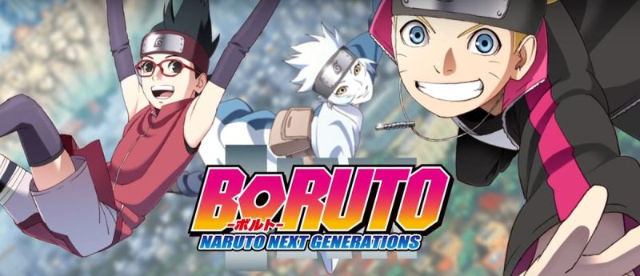
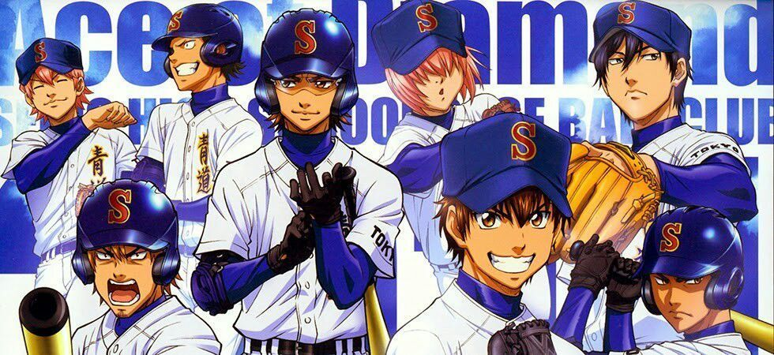

Kageyama Shigeo, apodado "Mob", es un chico con problemas para expresarse pero que en realidad
es un
poderoso esper. Mob está decidido a llevar una vida normal y mantiene sus poderes especiales
reprimidos, pero cuando sus emociones alcancen el nivel del 100%, ¡le ocurrirá algo terrible!
Rodeado por falsos espers, espíritus malignos y misteriosas organizaciones.
Fecha de inicio: 7 de marzo de 2019
Director: Warner Japan
Año: 2019
Generos: Acción, Comedia, Ficción sobrenatural
Dororo
Daigo Kagemitsu es un temible samurái que entregó su futuro hijo a demonios, a cambio de ver
animes
cumplido su sueño de conquistar el país. Al cabo del tiempo, nació un niño deforme, al que
faltaban
cuarenta y ocho partes de su cuerpo. Su ambicioso padre lo arrojó al río, pero el pequeño logró
sobrevivir y, con el tiempo, convertirse ver Dororo en un diestro espadachín llamado Hyakkimaru,
«pequeño monstruo». Años después, con la ayuda del joven y avispado Dororo, quien afirma ser el
mejor ladrón de Japón, Hyakkimaru emprenderá un viaje a lo largo del cual se enfrentará a los
demonios para recuperar las partes de su cuerpo.
Saitama comenzó a hacer héroe por pura afición, y tras tres años de un durísimo entrenamiento
consiguió tal nivel de fuerza que puede acabar con cualquier enemigo de un solo puñetazo. La
vida lo
llevó a conocer a Genos, un cíborg que ahora es su fiel discípulo, y a convertirse en un héroe
oficialmente bajo la Asociación de Héroes.
Fecha de inicio: 9 de abril de 2019
Directores: Chad Stahelski
Genero: Acción, Comedia, Ficción, Parodia, Shounen, Super poder
shingeki no kyojin III part 2
Muchos años atrás, la humanidad estuvo al borde de la extinción con la aparición de unas
criaturas
gigantes que devoraban a todas las personas. Huyendo, la humanidad consiguió sobrevivir en una
ciudad fortificada de altas murallas que se ha convertido en el último reducto de la
civilización
contra los Titanes que campan a sus anchas por el mundo.
Fecha de inicio: 22 de Julio de 2018
Directores: Hajime Isayama
Genero:Ficción de aventuras, Fantasía oscura, Ciencia ficción apocalíptica
Nanatsu no Taizai
Los "Siete Pecados Capitales", un grupo de caballeros malvados que conspiraron para derrocar el
Reino de Britania. Se dice que han sido erradicados por los Caballeros Sagrados, aunque algunos
afirman que todavía viven. Diez años más tarde, los Caballeros Sagrados han llevado a cabo un
golpe
de Estado y capturaron al Rey...
Nanatsu no Taizai (The Seven Deadly Sins), serie de animación inspirada en el manga de Nakaba
Suzuki, estrenará tercera temporada en Netflix a partir del mes de octubre.
Fecha de estreno: Octubre de 2019
Autor: Nakaba Suzuki
Generos: Ficción de aventuras, Fantasía
Fairy Gone
Fairy Gone es una serie de anime con guion original, producida por el estudio P.A.Works, salió
al
aire en abril de 2019.
Fecha de inicio: 7 de abril de 2019
Directores: Kenichi Suzuki
Generos: Cine de acción, Fantasía
Bakumatsu Crisis
El Bakumatsu fue una época en la que las almas de los jóvenes ardían de ansiedad por el futuro
de su
país. Takasugi Shinsaku, un soldado de fortuna de Choshu, se cuela a bordo de una nave del
gobierno
con su camarada Katsura Kogorou en busca de un misterioso «reloj» con el poder de manipular el
tiempo. En lugar de permitir que ese poder caiga en las manos equivocadas, Takasugi planea
destruir
el artefacto, pero al obtenerlo, le roban rápido el artefacto, obligando a su compañero a seguir
al
misterioso ladrón a la sede del gobierno en Kyoto.
Fecha de inicio: 4 de abril de 2019
Directores: Mitsutoshi Satō
Genero: Acción, Histórico
Bungo Stray Dogs
Habiendo sido expulsado del orfanato y estando a punto de morir de hambre, Atsushi Nakajima
conoce a
unos hombres muy extraños. Ambos son miembros de la "Agencia Armada de Detectives" que se dice
que
puede resolver cualquier incidente, incluso aquellos que la policía y el ejército no se atreven
a
investigar. Atsushi acaba acompañándolos en una misión.
En la ciudad virtual de Yokohama hay personas que ostentan el nombre de Bungo, "maestros
literarios", que poseen poderes inusuales vinculados a su nombre. Este es el inicio de la
batalla
entre los misteriosos poderes Bungo.
Nos encontramos en Asakusa, donde los estudiantes de segundo año de secundaria Kazuki Yasaka,
Toi
Kuji y Enta Jinnai conocerán a Keppi, una misteriosa criatura con aspecto de kapa que les roba
la
shirikodama a todos y los transforma en kappas. "Si quieren recuperar su forma original deberán
luchar contra los zombis y tomar sus shirikodamas".
Fecha de inicio: 11 de abril de 2019
Directores: Nobuyuki Takeuchi, Kunihiko Ikuhara
Generos: Fantasía, comedia, mahō shōnen
Boruto: Naruto Next Generations

En Konoha han entrado en una era de paz y modernidad. Los altos edificios despuntan en las
calles,
las pantallas gigantes muestran imágenes de todo tipo y los medios de transporte conectan los
vairos
distritos. Pese a que sigue siendo una aldea ninja, el número de civiles ha aumentado y la vida
de
los ninja ha cambiado. Boruto Uzumaki es hijo del Séptimo Hokage, Naruto Uzumaki, y se ha unido
a la
Academia Ninja para aprender. Otros estudiantes lo menosprecian de inmediato y consideran que
solo
está ahí por ser "hijo del Hokage", pero pronto Boruto disipará todas esas dudas sobre él.
Fecha de inicio: 5 de abril de 2017
Autor: Ukyo Kodachi
Generos: Acción, Artes marciales, Aventura, Comedia dramática, Fantasía,
Superpoderes
One Piece
Monkey. D. Luffy se rehusa a que nadie se interponga en su camino por la búsqueda para
convertirse
el rey de todos los piratas. Con un camino trazado por las traicioneras aguas del Grand Line y
más
allá, se trata de un capitán que nunca se dará por vencido hasta que consiga el tesoro más
grande de
la Tierra: el Legendario One Piece.
Fecha de inicio: Diciembre de 2019 (Bélgica)
Directores: Kōnosuke Uda
Generos: Acción, Aventura, Fantasía
Demon Slayer: Kimetsu no Yaiba
Tanjiro, un joven que se gana la vida vendiendo carbón, descubre un día que su familia ha sido
asesinada por un demonio. Para empeorar las cosas, su hermana menor Nezuko, la única
superviviente
de la masacre, ha sufrido una transformación en demonio. Destrozado por los acontecimientos
Tanjiro
decide convertirse en un cazador de demonios para poder devolver a su hermana a la normalidad y
matar al demonio que masacró a su familia.
Fecha de inicio: 6 de abril de 2019
Autoy: Koyoharu Gotouge
Generos: Aventuras, Fantasía oscura
Ace of the Diamond II

Un encuentro con el catcher Kazuya Miyuki cambia la vida de Eijun Sawamura, de 15 años. Dijo
adiós a
todos sus amigos y tocó en la puerta de Seidou, una escuela cuyo béisbol tiene un gran
prestigio,
con la intención de probar su propia fuerza. Allí conocerá a grandes jugadores prodigio que se
apuestan todo en el deporte. Béisbol, amistad y superación en una serie que no deja indiferente.
Fecha de inicio: 2 de abril de 2019
Directores: Mitsuyuki Masuhara
Generos: Comedia, Escolar, Deportes (béisbol)
Isekai Quartet
El botón apareció de la nada. No había señales de NO empujarlo... así que la solución es obvia,
¿no? ¿Es una trampa o el inicio de algo nuevo y emocionante? Las tripulaciones de Re: Zero,
Overlord, Konosuba y The Saga of Tanya the Evil lo descubrirán cuando vayan de su mundo a otro y
se
queden atrapados en... ¡¿clase ?! ¡Mira a qué adorable caos llegarán en esta colección de
pantalones cortos!
Fecha de inicio: 9 de abril de 2019
Directores: Minoru Ashina
Generos: Isekai, Comedia
Black Clover
En un mundo en el que la magia lo es todo, Asta y Yuno son dos niños que encuentran abandonados
el
mismo día en una iglesia. Mientras que Yuno crece demostrando tener unos grandes poderes
mágicos,
Asta parece ser la única persona en el mundo que no posee capacidad mágica alguna. Eso no
importará
a los dos jóvenes, que aspirarán a alcanzar el puesto de Rey Mago, el mejor mago de todos. Pero
para
ello tendrán que ser seleccionados primero por una Orden de Caballeros Mágicos, ¡y Asta no tiene
magia!
Fecha de inicio: 3 de octubre de 2017
Directores: Tatsuya Yoshihara
Generos: Acción, Aventura, Fantasía, Magia
Dr. Stone
Senku es un joven extremadamente inteligente con un gran don para la ciencia y su mejor amigo es
Taiju,
una buena persona pero más apto para usar los músculos que para pensar. Tras un acidente donde
todo
el
universo se convirtio en estatuas de piedra y al pasar 3689 años logran despertar, iniciando asi
una
nueva era (la edad de piedra), junto a otros personajes Senku y Taiju intentan crear un nuevo
mundo
con sus inventos, como lo hicieron sus antepasados...
Fecha de inicio: 5 de julio de 2019
Directores: Riichiro Inagaki
Generos: Ficción de aventuras, Outline of science fiction
Vinland Saga
Durante mil años, los vikingos se han hecho un gran nombre y reputación como las familias más
fuertes con sed de violencia.
Thorfinn, el hijo de uno de los mejores guerreros de los vikingos, pasa su niñez en un campo de
batalla para mejorar
sus habilidades en su aventura para redimir su venganza más deseada después de que su padre fue
asesinado.
Fecha de inicio: 8 de julio de 2019
Directores: Makoto Yukimura
Generos: Histórico, Acción
Enen no Shouboutai (Fire Force)
¡Tokio se está quemando, y los ciudadanos están sufriendo misteriosamente la combustión humana
espontánea en toda la ciudad!
El responsable de apagar este infierno es la Fuerza de Fuego, y Shinra está lista para unirse a
su
lucha.
Ahora, como parte de la Compañía 8, usará las huellas de su demonio para ayudar a evitar que la
ciudad se convierta en ceniza.
Pero su pasado y un secreto ardiente detrás de la escena podrían incendiar todo.
Fecha de inicio: 5 de julio de 2019
Directores: Yuki Yase
Generos: HFicción de aventuras, Fantasía oscura, Ciencia ficción